Secondi
14 ricette selezionate dall’archivio.
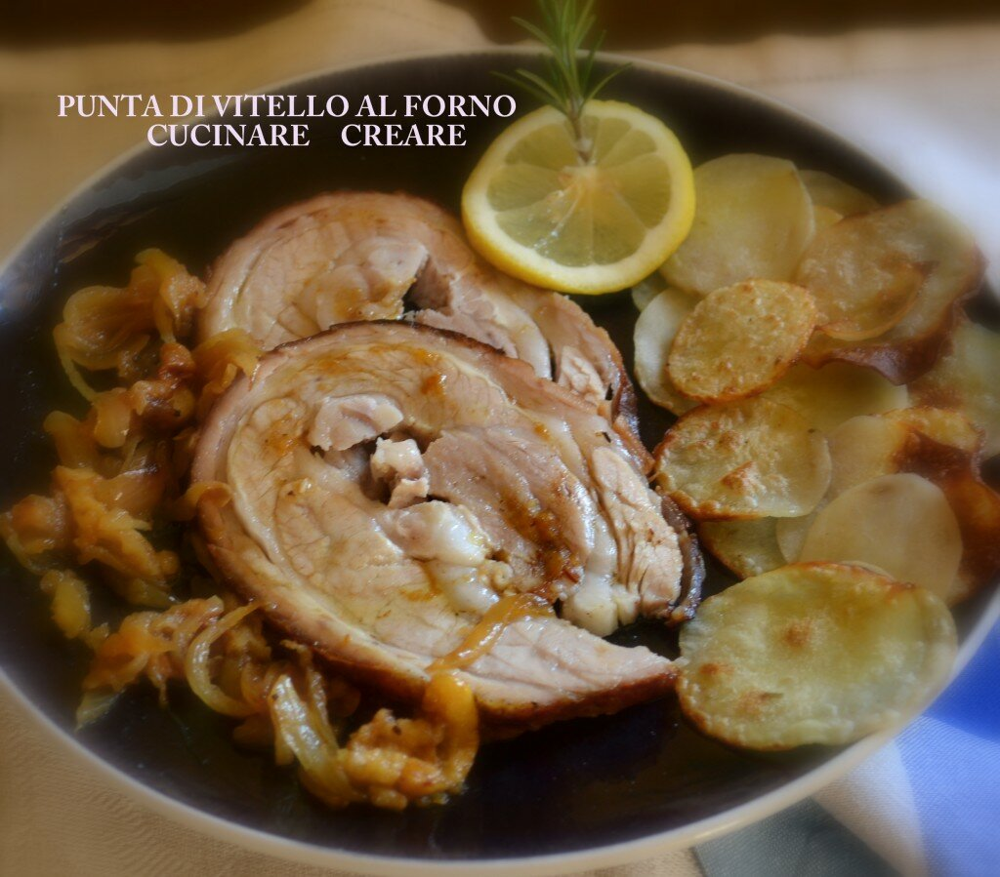
Punta di vitello al forno con cipolle e mele brasate
Ingredienti per 4 persone: 1 kilogrammo di carne (punta di vitello) olio di oliva 2 noci di burro patate per contor…
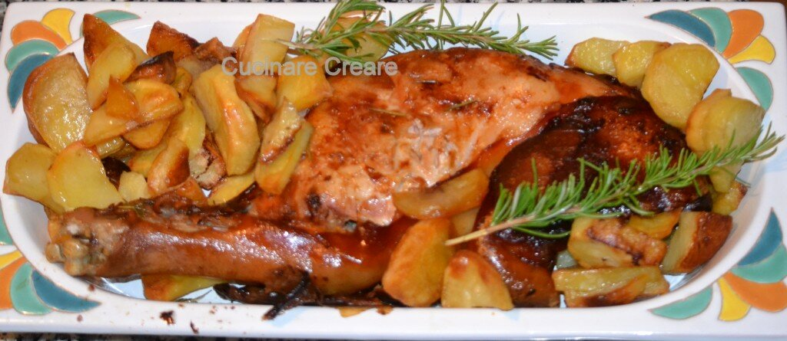
Porcetto sardo (tipica ricetta sarda)
Preparazione per 3 persone 1 cosciotto di maialino da latte (o carrè di maiale) sale patate per contorno Questo cos…
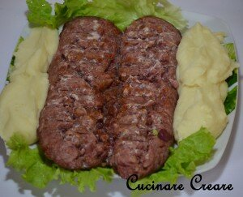
Salame ai ferri “brasaroel”
Ingredienti per 6 persone: 1 salame fresco 5 – 6 patate 50 grammi di burro 200 ml di latte 50 grammi di formaggio g…
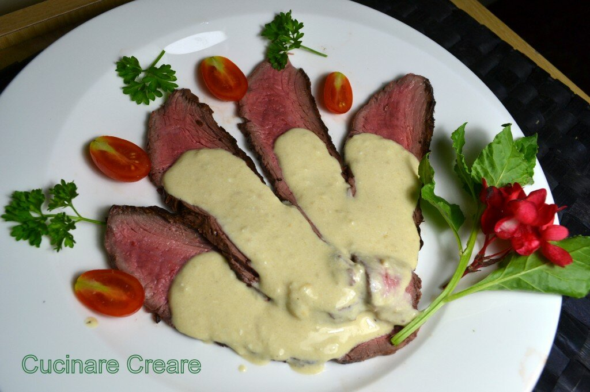
Tagliata di manzo con crema alla senape – sliced beef with mustard cream
Ingredienti: 1 kilogrammo circa di carne adatta per tagliata (fatevi consigliare dal macellaio di fiducia, non occo…
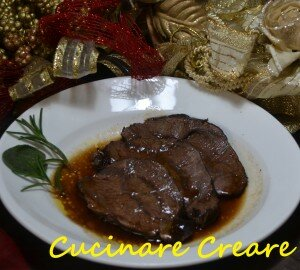
Stracotto di guanciale di manzo al Barbera
Ingredienti per 4 persone: 2 guanciali di manzo (se non li trovate usare il cappello del prete) 50 grammi di burro …
Tartare ricca su cestino di pane
Ho comprato questi cestini di pane fatti da un fornaio e li ho trovati molto interessanti per servire un’insalata m…
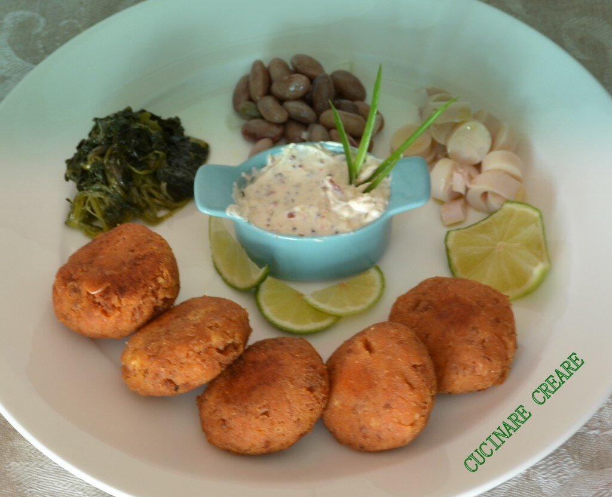
Polpette di ragù e Salsa allo Yogurt
Ingredienti per 4 persone POLPETTE: 300 grammi di ragu’ di carne 1 uovo 50 grammi di formaggio grattugiato pane gra…

Coppa al forno con crema di porri e verdure
Ingredienti: 1 coppa di maiale fresca sedano, carote e cipolle olio di oliva vino bianco secco sale, pepe e aromi m…
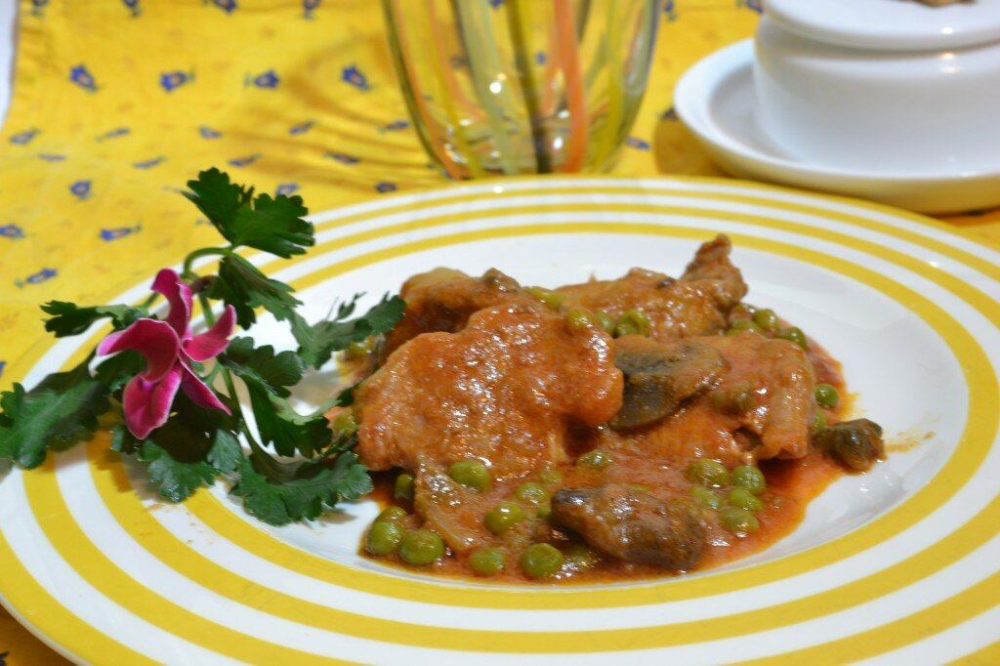
Spezzatino con funghi porcini, piselli e polenta
Ingredienti: 500 grammi di carne di manzo spezzatino 1 confezione di funghi porcini surgelati o fre3schi 1 cucchiai…
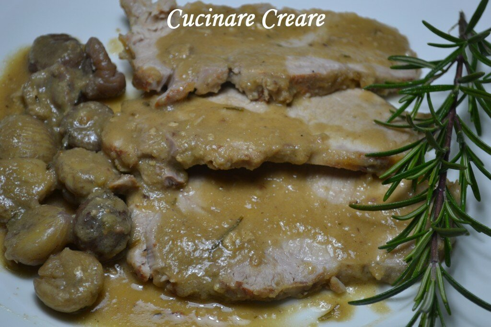
Arrosto con contorno di castagne
Ingredienti per 6 persone 1 kilogrammo di scamone di manzo 2 cucchiai di olio 1 cipolla 2 bicchieri di vino bianco…
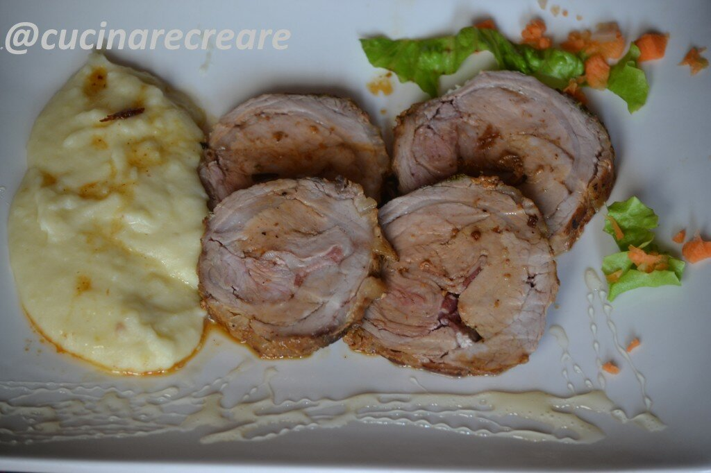
Arrosto di vitello con miele e brandy
Ingredienti per 5 persone: 1 kilogrammo di carne di vitello farcita con pancetta (fate preparare questo al vs macel…
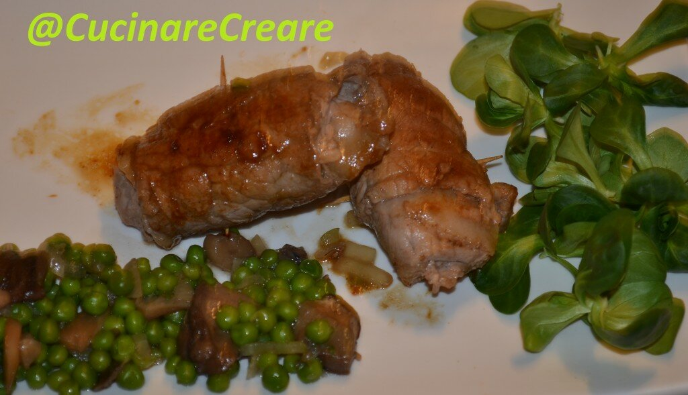
Involtini di carne e contorno di piselli e funghi
Ingredienti per 5 persone 10 fettine di carne di manzo 20 fettine di lardo 10 foglie di salvia 2 cucchiai di burro …
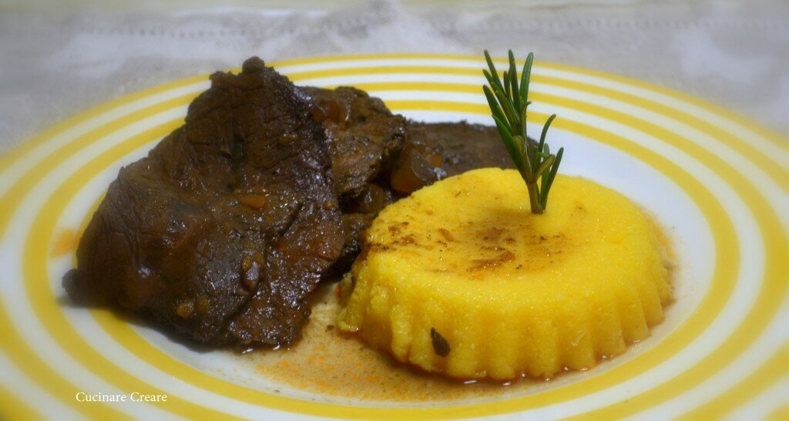
Stracotto di cavallo e polenta
Ingredienti per 4 – 5 persone 1 kilogrammo circa di carne adatta per stracotto o brasato sedano, carota e cipolla v…
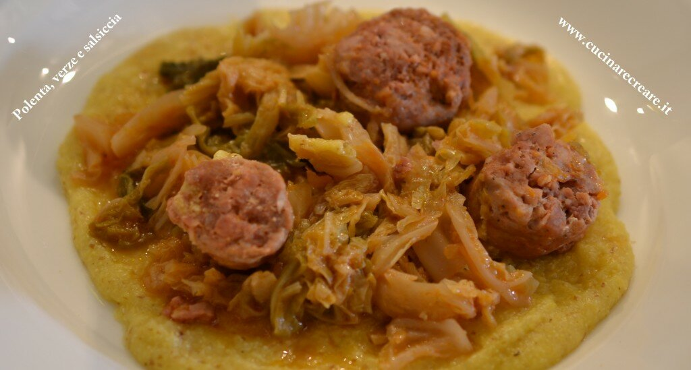
Polenta con verza e salsiccia
Ingredienti per 4 persone: 4 salsicce 1 verza piccola 2 cucchiai di concentrato di pomodoro 2 cucchiai di aceto sal…